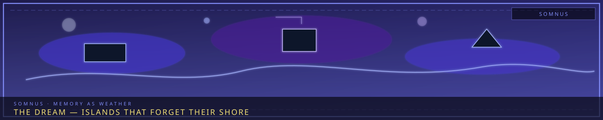

/// RAPID JUMP:
STATUS: ARCHIVE VERIFIED |
CLEARANCE: LEVEL-4 OVERSIGHT |
PROTOCOL: REVERIE DIRECTORATE
ARTICLE
DISCUSSION
SOURCE
HISTORY
YEAR 4,238 · DAWN OF HOPE
LORE · SOMNUS · VEIL
The Dream Realm
“In the Dream, memory is weather. Desire is landscape. Sleep is a border, not a rest.”

Overview
The Dream Realm (Somnus, 유몽계) is not a second city. It is a dimensional layer of unformed potential — memory, desire, fear, sorrow that has not crystallized into street. Sleep in Somnarak is not rest. You enter. The guild that dives it is the Weavers; their Resonance is The Dream. Relics, SED “narrative function,” and the Weaver org-chart do not belong in this heading stack.
“The Dream is not a place. It is a state — of mind, of memory, of sorrow.”
The Dream Veil
꿈의 베일 — aurora, not a wall. Thinner at the Spire of Dreams, Echo Gardens, Alpha Tree. Thinning by the century. Strong feeling makes it thinner; Dream-stuff leaks. Touch unprepared and it pulls you through. Citizens who see it call it the most beautiful thing they have seen, which is how it kills.
Five layers
Shallow (1). Nightly sleep: your house, your shift, muted blue-grey. Safe and not restful. You wake tired because the layer is made of sorrow.
Memory (2). Not only yours — the city’s. An endless library of crystals, each a life-fragment, air of old tears. Keepers argue a Layer 2 pull is not an Archive Echo. They still trade research with Weavers.
Sorrow (3). Compressed civic grief. Unprepared divers do not come back whole. Pieces of identity sit here and wait.
Deep (4). Forgotten truths. Weaver domain. Critical.
Core (5). The heart. Unexplored in source. Unknown danger is still danger.
Each Dreamer sees a different street. The layer does not care about your map.
Dream-diving
Deliberate entry, not sleep. Training, Resonance Mask, a reason. The Loom sends or pulls. Risks: dissolution, addiction to the mask’s replay, leaving yourself on Layer 3. Time stretches. Minutes upstairs, hours down. Directorate Dream Chambers are Weaver-staffed. Wardens do not trust the work.
How it looks
Shifting, subjective, dangerous, beautiful. Each Dreamer sees their own sorrow first. Layer 1 (Shallow) is sleep’s surface — streets that remember your last thought. Layer 2 (Memory) is rooms of recollection; this is the Taboo 4 grey area: a recording, not the past rewritten. Layer 3 (Sorrow) is where Han is weather. Layer 4 (Deep) is where identity thins. Layer 5 (Core) is where Weavers stop sending novices.
The Veil (꿈의 베일) is a shimmering barrier, aurora-colored, thinner at the Spire, Echo Gardens, and Alpha Tree. It is thinning century by century. Strong emotion makes it leak. Touching it unprepared can pull a person through. Citizens who see it call it the most beautiful thing they have ever seen, which is not a compliment in this city.
Dream-diving is deliberate entry: Loom to open a thread, Mask to keep a name, Interpretation Bureau to read what came back. Risks: addiction (it shows you what you want), identity-blur (Keeper Resonance’s cousin), entities that look like people you miss. Tools live on the Weavers. Do not paste Weaver org-charts here.
Spire of Dreams
Building 4, south point of the Alpha Tree, Zone A. Glass that shows illusions. Head Weaver’s seat. Collapse scenario in source: a Dream entity takes the Spire and traps the guild — Dream bleeding into the street without a handler. That lives on the Weavers page. See Zone A and Resonances.